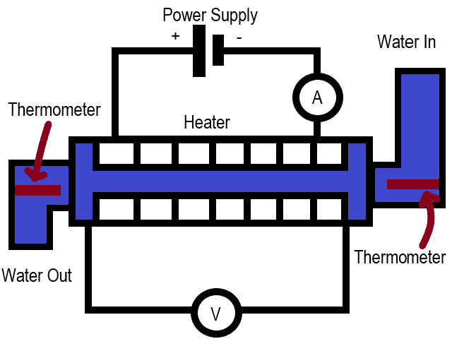
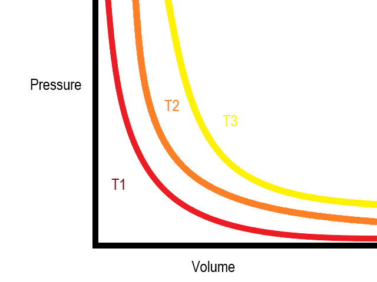
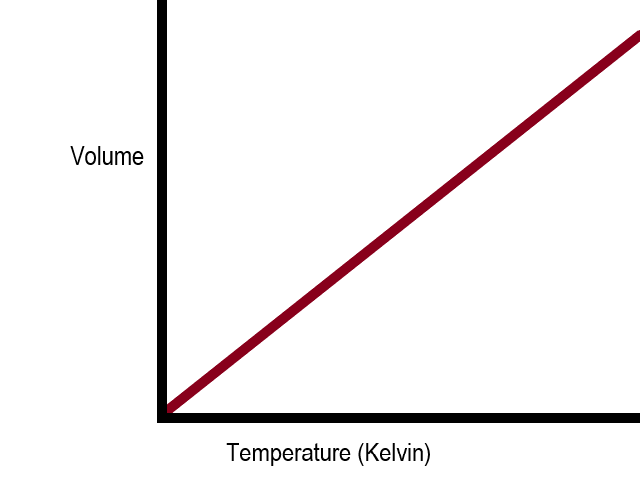
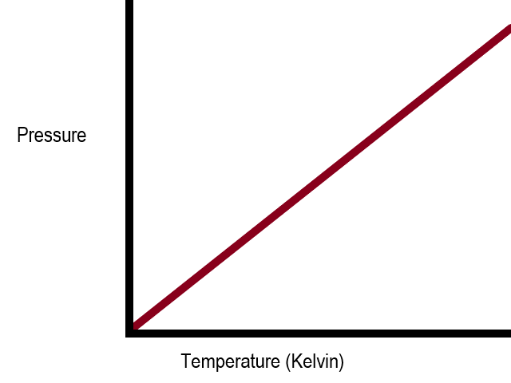
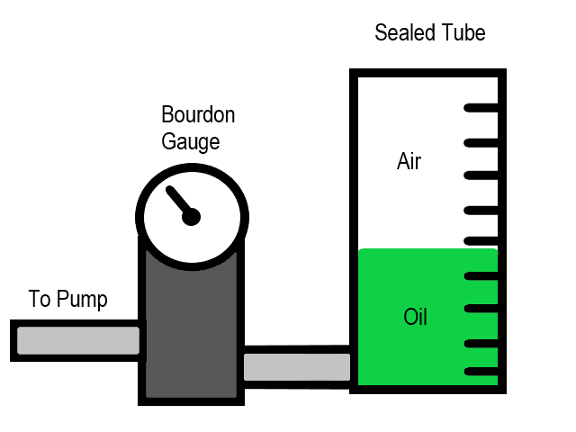
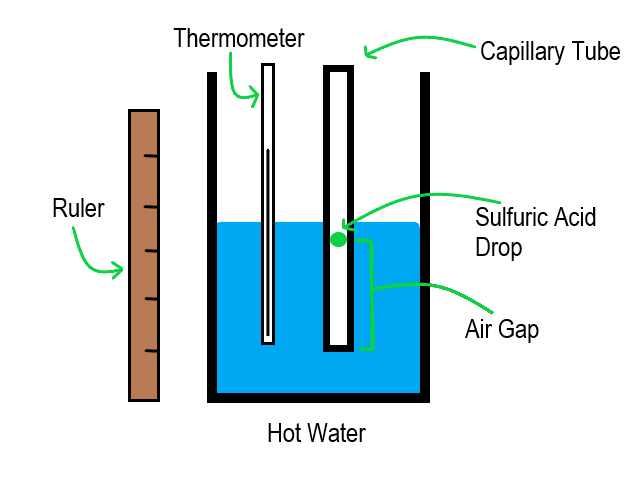

Thermal Physics
Energy Transfer
Potential, Kinetic and Internal Energies
- Thermal energy, also called heat, is the energy that a system has due to its temperature.
- The thermal energy of a system is related to the average kinetic energy of the particles in said system - a high temeprature is caused by particles in the system moving around and vibrating very quickly.
- Particles in a fluid will move with randomly distributed speeds and directions. Therefore, they will have different kinetic energies. Because of this, the temperature of the system is related to the average kinetic energy of the particles.
- Particles in a system also have another form of energy - potential energy. This is different to kinetic energy, since it is the energy particles have due to their position relative to one another.
- Particles in a substance have potential energy because they are all attracted to each other via intermolecular forces and thus work must be done to separate them. We say that this work goes into the potential store of the particles.
- Gases have a large amount of potential energy, liquids will have some potential energy and solids will have very little potential energy in comparison.
- Internal energy is the sum of the kinetic and potential energies of the particles in a system.
- A closed system is a system in which no matter can enter or exit the system.
- If a system is closed, and no energy can enter or exit it, the internal energy of the system will be constant.
- Note that even in a closed system, particles will constantly transfer energy between their kinetic and potential stores, as they all move about and change position relative to each other. The internal energy will remain the same overall, though, provided that no energy can enter or exit the system.
- If work is done on a system, its internal energy will increase.
- If a system is allowed to cool (or energy is made to leave it via some other form), its internal energy will decrease.
Changes of State
- When a substance changes state, its particles gain potential energy, as they are separated further from one another.
- During a state change, a substance's temperature will not change. This is because the kinetic energy of the particles do not change, only the potential energy.
- Note that the temperature and thus kinetic energy of the particles in a substance must reach a threshold before a state change can occur, but for the duration of the state change, the temperature of the substance wil not change.
- The energy required for an object to change state depends on the mass of the object and the material the object is made from.
- Specific latent heat is the amount of energy required, per unit mass, to change the state of a material.
- Specific latent heat gives the energy per unit mass required to change state from solid to liquid or liquid to gas, and also gives the energy per unit mass released to the surroundings when a material changes from a gas to a liquid or from a liquid to a solid.
- There are two different types of specific latent heat: the specific latent heat of fusion (for melting and freezing) and the specific latent heat of vaporisation (for evaporation or condensation).
Specific Heat Capacity
- Specific heat capacity is the energy required per unit mass to increase the temperature of a material by one degree Kelvin.
- Specific heat capacity is calculated using the equation: energy = mass × specific heat capacity × change in temperature.
- Sepcific heat capacity can be calculated via experiment. The first step involves setting up a continuous flow calorimeter with a heater, a power supply, an ammeter, a voltmeter and two thermometers.
- The second step of the continuous flow calorimeter experiment is to turn on the water, and then the power supply. Make sure to record the potential difference and the current.

- The third step of the continuous flow calorimeter experiment is to measure the temperature of the water flowing in, as well as the temperature of the water flowing out and use these to calculate the change in temperature.
- The fourth step of the continuous flow calorimeter experiment is to record the rate of water flow out of the pipe. Stop the water flow after a fixed amount of time. After stopping the experiment, calculate the input energy using current × potential difference × time - H, where H is the heat energy lost to the surroundings. Calculate the mass of water using flow rate × time.
- The fifth step of the continuous flow calorimeter experiment is to repeat the experiment, changing both the flow rate of the water and the power of the power supply so that the temeprature change remains constant.
- The sixth step of the continuous flow calorimeter experiment is to equate the two equations: Q₁ = m₁ × c ×Δθ + H, Q₂ = m₂ × c ×Δθ + H. We know the input thermal energies, the masses and the change in temperature. By subtracting the second equation from the first, we get Q₁ - Q₂ = (m₁ × c ×Δθ + H) - (m₂ × c ×Δθ + H). This simplifies to c = (Q₁ - Q₂) / (Δθ(m₁ - m₂)).
Gas Laws
The Kelvin Scale and Absolute Zero
- There is a minimum possible temperature, where a particle theoretically has zero kinetic energy. This is called absolute zero.
- The Kelvin scale is an absolute scale. Zero Kelvin is equal to absolute zero. A unit increase of one Kelvin is equal in magnitude to a unit increase of one degree Celsius. Zero degrees Celsius is equal to 273 Kelvin.
- Using the Kelvin scale, temperature is directly proportional to the energy of the particle.
Gas Laws
- There are three main gas laws. They are each only true for a fixed mass of gas.
- Boyle's Law states that pressure is inversely proportional to volume, under isothermic conditions. In symbols it is written as: p = k / V.
- Boyle's Law is true because, if a fixed mass of gas is compressed to a smaller volume, its particles will collide much more often with the surface of the container, thus increasing the pressure on the container walls.
- For a constant temperature, a pressure (y-axis) against volume (x-axis) graph will product a k / x graph. The larger the temperature, the larger k will be and the higher up the curve will be. In the diagram below, T1 shows the lowest temperature and T3 shows the highest temperature of the three.

- Charles' Law states that volume is directly proportional to absolute temperature, under isobaric conditions. In symbols it is written as: T = kV.
- Charles' Law is true because particles with a higher temperature will have more kinetic energy. Therefore, they will move about more and spread out more, hence volume will increase on average.
- For a constant pressure, a volume (y-axis) against temperature (x-axis) graph will be a straight line graph. If temperature is measured in Kelvin, the graph will pass through the origin. If temperature is measured in degrees Celsius, the line will pass through the x-axis at x = -273 degrees Celsius.

- The Pressure Law states that pressure is directly proportional to absolute temperature when volume is constant. In symbols, this is written as: p = kT.
- The Pressure Law is true because particles with a greater temperature have more kinetic energy, and thus collide with the surface more frequently and with greater energy, thus increasing pressure.
- For a constant volume, a graph of pressure (y-axis) against temperature (x-axis) will be a straight line. If temperature is measured in Kelvin, the line will pass through the origin. If temperature is measured in degrees Celsius, the line will pass through the x-axis at x = -273 degrees Celsius.

An Experimental Approach to the Gas Laws
- Boyle's Law can be investigated experimentally. The first step involves setting up equipment. Set up a sealed tube with a volume scale (e.g. a sealed measuring cylinder) and a fixed volume of oil inside. Connect this to a Bourdon Gauge (for measuring pressure), and a pump.

- The second step in the Boyle's Law experiment involves recording the initial volume and pressure (i.e. atmospheric pressure).
- The third step in the Boyle's Law experiment involves increasing the pressure using the pump. Every time pressure is increased, record the volume of the air in the cylinder. The exerted pressure should cause the oil to move up the cylinder. After each pump, the oil will move upwards until the pressure exerted on the oil by the air is equal to the pressure of exerted on the air by the oil. This means that the reading of the Bourdon Gauge will give you the pressure on the air as well as on the oil. Record the new pressure and volume of the air each time.
- The fourth step in the Boyle's Law experiment involves plotting a graph of pressure against 1 / volume. The result should be a straight line that passes through the origin.
- Charles' Law can also be investigated experimentally. The first step involves setting up equipment. Set up a capillary tube with a drop of sulfuric acid inside it, and place it next to a thermometer in some near-boiling water, inside a beaker. Make sure that their is an air gap below the sulfuric acid.
- The second step in the Charles' Law experiment involves waiting for the temperature of the water to cool about 5 degrees Celsius and recording the new temperature and the length of the air bubble beneath the sulfuric acid drop. Repeat this until the water reaches room temperature.

- The third step in the Charles' Law experiment involves repeating steps 1 and 2 at least three times and taking an average air bubble height for each temperature.
- The fourth step in the Charles' Law experiment involves converting temperatures to Kelvin and plotting a graph of air-gap length against absolute temperature. The line should be straight and pass through (or close to) the origin, as length is directly proportional to volume and volume is directly proportional to temperature, so length is directly proportional to temperature.
Ideal Gas Equation
Molecular and Molar Mass
- The molecular mass of a compound is the mass of one molecule of said compound. It may be given in kilograms, but most commonly it is given as a value relative to Carbon-12. For example, carbon dioxide is made up of a carbon atom (with a relative atomic mass of 12) and two oxygen atoms (each with a relative atomic mass of 16). Therefore, the relative molecular mass of carbon dioxide is 12 + 16 + 16 = 44.
- The Avogadro Constant, often written as NA (often with the A in subscript), is equal to 6.02 × 10²³. A group of 6.02 × 10²³ molecules (or atoms, or any other object really) is called a mole.
- A single mole of a substance will have a mass in grams equal to the relative atomic/molecular mass of the substance. For example, a mole of carbon-12 atoms will have a mass of 12 grams. A mole of hydrogen gas (H₂) will have a mass of 2 grams.
- In equations, a number of moles may be represented with the letter n, and will use the unit mol (1 mol is a single mole of a substance).
The Ideal Gas Equation
- An ideal gas is one that perfectly follows Boyle's Law, Charles' Law and the Pressure Law.
- Boyle's Law, Charles' Law and the Pressure Law all explain the behaviour of two of the gas quantities when the third is constant. The ideal gas equation explains what happens when all three vary.
- The ideal gas equation states that: pressure × volume = number of moles × molar gas constant × temperature.
- The ideal gas equation can be explained multiple ways. One way of thinking about it is viewing it as a mix of all three gas laws. Boyle's Law states that pressure × volume = constant (when temperature is constant), Charles' Law states that volume / temperature = constant (when pressure is constant) and the Pressure Law states that pressure / temperature = constant (when volume is constant). Therefore, it stands to reason that pressure × volume / temperature should be constant.
- The pressure and volume of a gas are directly proportional to the number of moles of said gas - the more particles there are, the more force per unit area they will exert on a container, and the more space they will take up. For a given amount of internal energy, the temperature is inversely proportional to the number of moles. If there are fewer particles for a fixed amount of energy, each particle will get more energy, so the gas will be hotter.
- If pressure × volume / temperature = constant, pressure and volume are proportional to number of moles of gas and temperature is inversely proportional to the number of moles of gas, it stands to reason that pressure × volume / temperature is directly proportional to the number of moles of gas. Therefore, pressure × volume / temperature = number of moles × constant, so pressure × volume = number of moles × constant × temperature. This gives the ideal gas equation.
- Another way of thinking about the ideal gas equation is by starting with Boyle's Law: pressure × volume = constant at a constant temperature. This shows that the value of pressure × volume is somehow related to the temperature. We can say that pressure × volume = f(temperature), where f is a function. Since Charles' Law states that volume is directly proportional to temperature when pressure is constant, we can see that pressure × volume = constant × temperature, as volume must be directly proportional to temperature when pressure does not change (e.g. in the Charles' Law experiment). Since the pressure and volume are each proportional to the number of moles, it stands to reason that pressure × volume = number of moles × molar gas constant × temperature.
- The molar gas constant is equal in value to 8.31Jmol⁻¹Kg⁻¹.
- The ideal gas equation can also be written in terms of molecules. The number of molecules may be denoted by a capital N. The Boltzmann constant is the constant used for the ideal gas equation when number of molecules is used instead of number of moles. Its value is calculated by dividing the molar gas constant by the Avogadro Constant, and is equal to 1.38 × 10⁻²³ JKg⁻¹.
- Note that most gases are not "ideal gases" but follow the ideal gas equation closely enough. The ideal gas equation can only be used as an approximation for gases with relatively high temperatures and low pressures.
Work Done on a Gas
- For a gas at a constant pressure, work must be done to cause the gas to expand or contract. Work is done to move gas molecules apart from each other, causing the gas to expand. When a gas contracts at a constant temperature, it means that energy has been transferred to the surroundings.
- According to Charles' Law, volume is directly proportional to temperature. Therefore, work is often done in the form of heating to expand a gas.
- An example of work being done on a gas at constant pressure is a balloon. A balloon at a fixed height will always have a constant pressure, since the balloon will always expand or contract until the pressure of the air inside is equal to the atmospheric pressure outside. Therefore, the balloon's internal pressures must be equal to the atmospheric pressure at all times. If a balloon is heated, the gas inside it will gain temperature, and thus volume (because of Charles' Law), causing the balloon to expand. If the heat source is removed, some of the internal energy of the gas will be transferred to the surroundings, and the temperature and volume of the balloon will each decrease.
- The work done when the volume of a gas is changed at constant temperature is equal to pressure × change in volume. This works because pressure is force per unit area and volume is equal to area × distance. Therefore, pressure × change in volume = (force / area) × (area × distance) = force × distance = work done.
"Pressure of an Ideal Gas" Equation and Kinetic Energy
Deriving the Equation
- The pressure of an ideal gas equation states that: pressure × volume = (1/3) × number of molecules × molecular mass × (root mean square speed)², where molecular mass is given in kilograms.
- The first step in deriving the pressure of an ideal gas equation is to imagine a single gas molecule striking a surface of a cubic container of length L head on (i.e. in a perpendicular direction to the surface).
- The second step in deriving the pressure of an ideal gas equation is to calculate the momentum of the gas molecule as mass × velocity.
- The third step in deriving the pressure of an ideal gas equation is to assume it bounces back elastically, with the same speed in the opposite direction. This means that the change in momentum would be -2 × mass × velocity. The change in momentum is equal to the impulse.
- The fourth step in deriving the pressure of an ideal gas equation is to calculate the time taken between collisions with the same wall. As the molecule moves with constant magnitude of velocity it will take length / veloctiy seconds to travel from one end of the cubic container to the other, and it will take 2 × length / velocity to travel to the other side and back - this is the time taken between collisions.
- The fifth step in deriving the pressure of an ideal gas equation is to calculate the average force exerted on the wall by a single molecule. This will be the same as the average force exerted on the molecule by the container, but in the reverse direction because of Newton's Third Law. Force = change in momentum / time, so we can say that the average force on the particle = (-2 × mass × velocity) / (2 * length / velocity), which simplifies to -(mass × velocity²) / length. Therefore the average force on the wall, which is of the same magnitude but in the opposite direction due to Newton's Third Law is equal to (mass × velocity²) / length.
- The sixth step in deriving the pressure of an ideal gas equation is to calculate the total average force on a single container wall. This can be done by multiplying the force exerted on the wall by a single molecule by the number of molecules, and using the average speed of the molecules instead of the velocity of a single molecule. This gives the equation: Force on wall = (number of molecules × mass × (average speed)²) / (length)
- The seventh step in deriving the pressure of an ideal gas equation is to calculate the pressure on the wall by dividing the average force on the wall by the area of the wall, since pressure = force / area. Note that area is equal to length². This gives: pressure = (number of molecules × mass × (average speed)²) / (length³). This can be simplified to pressure = (number of molecules × mass × (average speed)²) / volume.
- The eighth step in deriving the pressure of an ideal gas equation is to consider that the gas molecule moves in all three dimensions, and the equation only accounts for the average square speed in the dimension perpendicular to the surface of the container, and not the overall average speed of the molecule in all dimensions (which is often referred to as the root mean square speed). Using Pythagoras' Theorem we can demonstrate that the mean square speed is equal to the sum of the squares of the speeds in each dimension: C² = x² + y² + z², where C is the overall mean square speed and x, y and z are the speeds in their respective dimensions. As the speed in each dimension will be about the same on average, we can say that C² = x² + x² + x², where x is the speed in the dimension perpendicular to the surface. Therefore, C² = 3x², so the average speed perpendicular to the surface, x², is equal to (1/3) × (root mean square speed)². Therefore, in our equation we can substitute (average speed)² (which refers the the average speed in the perpendicular direction) for (1/ 3) × (root mean square speed)².
- The ninth step in deriving the pressure of an ideal gas equation is to write out the equation in full: pressure × volume = (1/3) × number of molecules × mass × (root mean square speed)²
Simplifying Assumptions
- In real life, most gases are not ideal gases, at least not under all conditions anyway.
- The pressure of an ideal gas equation makes assumptions about gases. This means it can be used for approximations and averages, but not necessarily for 100% accurate values.
- One of the simplifying assumptions is that all molecules move about with randomly distributed speeds and directions.
- Another simplifying assumption is that all collisions are elastic.
- A third assumption is that the molecules all obey Newton's Laws.
- A fourth assumption is that molecules travel in straight lines and do not collide with each other, only with the walls.
- A fifth assumption is that the forces that act on the molecules at the surfaces last for a negligible amount of time (so that the time between the collisions is much greater than it).
Average Kinetic Energy of a Molecule
- By equating the ideal gas equation and the pressure of an ideal gas equation, we can calculate the average kinetic energy of a gas molecule.
- Using the ideal gas equation and the pressure of an ideal gas equation, we can see that pressure × volume = number of molecules × Boltzmann Constant × absolute temperature = (1/3) × number of molecules × mass of molecule × (root mean square speed)². This is the first step in deriving the equation for the average kinetic energy of a gas molecule.
- The second step in derving the kinetic energy of a gas molecule equation is to divide by the number of molecules on each side to get: Boltzmann Constant × absolute temperature = (1/3) × mass of molecule × (root mean square speed)².
- The third step in deriving the kinetic energy of a gas molecule equation is to multiply each side by 3/2 to get: (3/2) × Boltzmann Constant × absolute temperature = (1/2) × mass of molecule × (root mean square speed)². The right hand side of this is the kinetic energy of a gas molecule.
- Since the Boltzmann Constant is equal to the molar gas constant divided by the Avogradro constant, the kinetic energy of a gas molecule can be written as: (3 × molar gas constant × absolute temperature) / (2 × Avogadro Constant) = (1/2) × mass × (root mean square speed)².
A History of Thermal Theories
- Scientific laws can be empirical or theoretical. Empirical laws are based on observations and experiental evidence, whereas theoretical laws are derived from existing knowledge.
- The gas laws are empirical, whereas kinetic theory is theoretcical.
- The Ancient Greeks and Romans were the first to propose anything similar to modern kinetic theory. The philosopher Democritus had proposed a similar idea about 2000 years ago.
- Robert Boyle discovered Boyle's Law in 1662.
- Jacques Charles discovered Charles' Law in 1787.
- Guillaume Amontons discovered the Pressure Law in 1699, although it was rediscovered by Joseph Louis Gay-Lussac in 1809.
- In the 1700s, Daniel Bernoulli proposed kinetic theory to explain Boyle's Law.
- In 1827, Robert Brown discovered Brownian motion, which provides evidence for kinetic theory.
- Brownian motion describes the motion of solid particles in a fluid, for example pollen grains in water. The solid particles will move in random zig-zag paths. This is because they are being pushed constantly by the atoms in the fluid, which are too small to see.
- Brownian motion provides evidence that fluids are made up of atoms.
- Scientific ideas cannot be immediately accepted, they must be demonstrated to be correct via peer review and experimental observation. Experiments and hypotheses must be independently validated before they can be accepted.
- For example, Daniel Bernoulli's proposition of kinetic theory was not immediately accepted. It wasn't recognised as an accurate model of the universe until much later, when Einstein was able to use ideas of kinetic theory to predict Brownian motion that kinetic theory was fully accepted.